Luogo comune: l'IH870 avrebbe incrociato decine di aerei durante il suo ultimo volo. Motivazione: un così elevato numero d'incroci consentirebbe di escludere la presenza del MiG-23 "sotto alla pancia" del DC-9.
Tra i principali motivi addotti a giustificazione di questo luogo comune, c'è quello che dà per scontato il fatto che un aereo di linea incrocia molti altri aerei durante il volo (si può trovare in rete chi parla addirittura di decine d'incroci). Qualcuno a bordo di uno di quegli aerei avrebbe sicuramente notato la presenza di un intruso "appiccicato" al DC-9 e lo avrebbe certamente riferito alle autorità, una volta appresa la notizia del disastro aereo.
In questa pagina, quindi, saranno dettagliatamente analizzati tutti gli incroci con altri aerei civili ricavabili dai tabulati radar, cercando di appurare se l'ipotetico MiG-23 avesse potuto essere scorto a seguito degli incroci effettivamente verificatisi.
Siccome lo scopo di questa pagina è sfatare una delle innumerevoli bufale inventate su questa tragedia, l'argomento relativo alla possibilità che in coda al DC-9 Itavia ci potesse essere il MiG-23 non sarà qui affrontato, dal momento che esiste già l'apposita pagina "Presenza del MiG-23". In questa sede si ribadisce soltanto, in estrema sintesi, che esistono forti evidenze sul fatto che un aereo più piccolo di un DC-9-15 ha volato a breve distanza dall'IH870 (da qualche centinaio di metri a non più di 2 km) durante alcune fasi del volo, ma non esiste alcuna evidenza oggettiva in merito al tipo di aereo.
INDICE
Rilevamento dei bersagli da parte del radar Marconi
Oltre all'individuazione a vista, il MiG era anche soggetto, ovviamente, all'individuazione tramite radar e siccome avrebbe fatto tutto il possibile per restarne al riparo, in questo paragrafo si prende in considerazione la posizione che il MiG avrebbe dovuto tenere rispetto al DC-9 per evitare di generare plot vicini a quelli dell'IH870 sullo schermo dei controllori di Roma Radar (plot che avrebbero allarmato i controllori). È chiaro che uno o due plot di solo primario rilevati nei pressi del DC-9 non avrebbero costituito motivo di allarme, perché il radar è molto soggetto a falsi plot (specialmente il Marconi), lo si vede benissimo nelle varie cartine presenti nel sito. Ciò significa che se il MiG fosse uscito per una quindicina di secondi dalla "zona d'ombra" creata dalla presenza del DC-9, nessuno avrebbe potuto pensare alla presenza di traffico non autorizzato nei pressi dell'IH870.
Siccome il radar normalmente usato dai controllori di Roma era il Marconi (in particolare l'estrattore 1, v. "Motivazioni - Parte 1a", seconda metà di pag. 148), è necessario approfondire le particolarità che caratterizzano il funzionamento di questo radar.
L'argomento è piuttosto complesso ed è parzialmente trattato nella pagine "Stato delle radioassistenze" e "Fasi del volo - Ultimi minuti", ma per una trattazione più approfondita si veda la pagina "RADAR e SIF".
Posizione del MiG rispetto all'IH870
Al fine di definire correttamente le condizioni di visibilità del MiG, è utile tenere in considerazione quanto affermato nel paragrafo "Stato delle radioassistenze → Cosa comporta la mancata disponibilità delle radioassistenze? → 4) Incrocio con altri aerei" ed in particolare è indispensabile prendere atto dell'evidente impossibilità di generare (quella sera) la scia di condensazione da parte di un aereo dotato di turboreattore (come il MiG-23) che volasse alla quota dell'IH870 o inferiore. Ciò riduce notevolmente la distanza alla quale si può iniziare a scorgere un aereo.
Anche nel caso in cui ci si avvicini a sufficienza per notare la presenza di un aereo a breve distanza dal DC-9, ciò non costituirebbe motivo di allarme o stupore, almeno da parte dei piloti di un altro aereo, fino a quando, chiaramente, non si riuscisse ad identificare la sagoma di un aereo militare o, addirittura, di un aereo militare di fabbricazione sovietica. Il motivo è illustrato dalla seguente immagine (le dimensioni dei due aerei sono in scala).
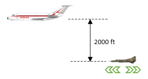
Durante il volo in aerovia capita che due aerei si possano trovare a breve distanza l'uno dall'altro e che vadano nella stessa direzione; non c'è niente di strano, l'importante è che mantengano tra loro la separazione verticale minima di 2000 ft (610 m). Un esempio lo abbiamo proprio per l'IH870 che dopo Firenze non viene ancora fatto salire al di sopra del livello di volo 230 a causa della presenza dell'IH779 al livello 250 (v. "Comunicazioni T/B/T → 4) Salita al livello 230"), mantenendo, quindi, la separazione verticale minima di 2000 ft tra aerei che volano nella stessa direzione.
Il MiG, per dare l'idea ad eventuali osservatori in lontananza di non avere niente a che fare con il DC-9, poteva ciclicamente avvicinarsi ed allontanarsi lentamente da questo, simulando il mantenimento di una velocità diversa da quella dell'IH870, come normalmente avviene durante la fase di crociera tra due aerei che si trovano per puro caso a passare uno sotto l'altro. Il MiG aveva ben 2 km per attuare questo tira e molla, prima di essere rilevato dal radar Marconi, ma è chiaro che questo "giocherellare" del MiG non sarebbe più valso a niente qualora, come detto, un aereo si fosse avvicinato alla coppia tanto da iniziare a riconoscerne le sagome.
Il MiG, comunque, non era certo un aliante trainato dal DC-9; in caso di necessità, avrebbe avuto ampia capacità di manovra per evitare di essere avvicinato.
Campo visivo dei piloti
Siccome la cabina di pilotaggio offre un campo visivo di gran lunga superiore a quello dei finestrini lungo la fusoliera, riveste maggiore importanza focalizzare l'attenzione sul campo visivo dei piloti, piuttosto che su quello dei passeggeri.
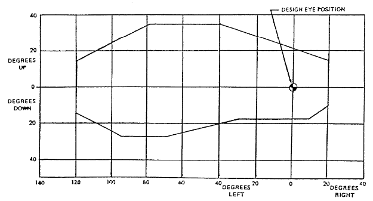
L'immagine è tratta dalla pag. 3 della circolare n° 25.773-1 emessa dalla Federal Aviation Administration e mostra il campo visivo raccomandato per il pilota seduto a sinistra (che normalmente è il comandante; per il primo ufficiale, il campo visivo è esattamente speculare).
Molti degli aerei in volo all'epoca dei fatti, avevano una visibilità di cabina progettata secondo le raccomandazioni dell'Aerospace Standard AS 580B, visibilità sostanzialmente uguale a quella mostrata dall'immagine.
Possiamo ritenere che i piloti potessero vedere fino a circa 18/20° verso il basso quando guardavano in avanti, per arrivare fino a 25° quando iniziavano a volgere lo sguardo lateralmente.
Il campo visivo laterale può essere notevolmente aumentato se il pilota reclina il busto verso il finestrino, mentre il campo visivo anteriore verso il basso non può essere migliorato in modo significativo.
Orizzonte locale
Nel precedente schema, la linea orizzontale indicata con "0" viene normalmente chiamata orizzonte locale. Siccome durante la trattazione degli incroci viene fatto largo uso del concetto di orizzonte locale riferito ai vari aerei coinvolti e agli angoli che da esso derivano, è utile focalizzare bene il significato di orizzonte locale e l'effetto che la quota di volo ha su di esso.
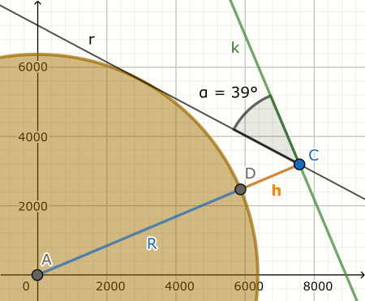
Il disegno mostra la Terra schematizzata come un cerchio di raggio R pari a 6371 km (in questa scala, la differenza rispetto alla reale forma è assolutamente impercettibile).
L'aereo C vola alla quota h (esageratamente elevata solo per maggiore chiarezza).
Siccome vengono date varie definizioni per descrivere l'orizzonte (astronomico, locale, vero, apparente, ecc.) e non sempre concordi, in questa pagina l'orizzonte di C è rappresentato dalla retta k ed è solitamente chiamato orizzonte astronomico. Anche se qui non si parla di astronomia, questa definizione dell'orizzonte è coerente con lo schema presentato nel precedente paragrafo "Campo visivo dei piloti".
Nel disegno, quindi, lo sguardo verso il basso dei piloti equivale alla sinistra di k, mentre uno sguardo verso l'alto (verso il cielo) è rivolto a destra di k.
Ipotizzando che C stia volando verso nord, la retta r è la linea di vista dei piloti che rivolgono lo sguardo quanto più possibile sotto l'orizzonte senza che la vista subisca l'ostruzione da parte della Terra (non viene considerata la rifrazione atmosferica).
L'angolo α è, nel nostro caso, di ben 39°, ma solo perché, come detto, la quota di C è esageratamente elevata. Questo angolo è anche utile per visualizzare il fatto che se il sole è già tramontato per un osservatore situato sulla superficie terrestre nel punto D (avente coordinate geografiche identiche a C), non è detto che lo sia anche per C. Se, ad esempio, il sole fosse 15° sotto l'orizzonte di D, questo si troverebbe in piena notte, ma C sarebbe ancora in pieno giorno e perfettamente illuminato.
Nel caso realistico di una quota h di 10/12 km, l'angolo α può arrivare anche a 4°, se si considera la rifrazione atmosferica. Ciò deve essere tenuto in debito conto nei prossimi paragrafi.
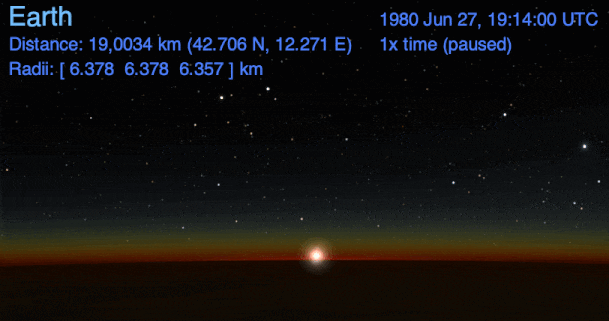
Questa breve animazione mostra l'effetto della quota di un osservatore (ad esempio un aereo) sull'elevazione del sole.
Le immagini che compongono l'animazione sono state generate con il programma Cosmographia (si veda la pagina CREDITS per tutti i dettagli, inclusi quelli che ne attestano l'attendibilità, essendo stato pubblicato dalla sezione NAIF del JPL).
Si può osservare che le coordinate e l'orario sono fissi, varia soltanto la quota del punto d'osservazione (ci troviamo nei pressi dell'incrocio con il BM300).
L'animazione inizia da una quota di 19 km, un po' alta per i normali voli di linea, ma ciò che conta è verificare che scendendo di quota, il sole scompare nascosto dalla Terra.
In questo caso, un oggetto A che vola ad una quota di 19 km risulta ben illuminato dal sole, anche se questo si trova circa 5° sotto l'orizzonte locale di A, ma sarebbe comunque visibile grazie al fatto che A vola ad alta quota.
Un aereo B che si trovasse a passare nello stesso punto di A, ma a 10 km di quota, avrebbe il sole soltanto 3° sotto l'orizzonte, ma si troverebbe al buio, pur avendo il sole più in alto di A.
Anche queste considerazioni torneranno utili nel seguito.
Traffico civile presente
Iniziamo con una visione d'insieme di tutto il traffico presente quella sera intorno al DC-9, come registrato dal radar Marconi di Roma.
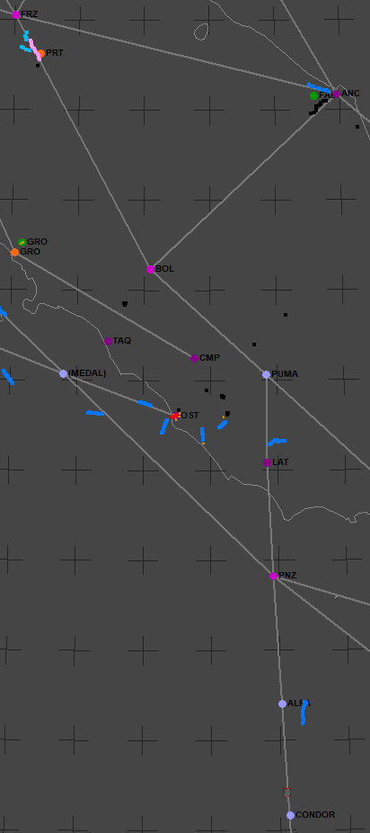
L'animazione (molto velocizzata) mostra i plot presenti nel tabulato relativo all'estrattore 3 del radar Marconi.
Come si può appurare, l'IH870 (plot rossi) passa nelle vicinanze di 5 aerei, tra quelli, ovviamente, presenti nel tabulato. Potrebbero essere in volo anche altri aerei non presenti nei tabulati perché troppo piccoli e/o a quota troppo bassa.
I plot più distanti presenti nel tabulato del radar Marconi si trovano a 157 nm verso nord, cioè 12 nm a sud di Bologna. A questa distanza, l'aereo più a bassa quota rilevato dal radar vola al livello 280, quindi i due radar di Roma sono poco utili per la zona a nord di Firenze.
Decisamente più utile, in questo caso, è il tabulato di Poggio Ballone, che per la stessa zona Firenze - Ferrara, mostra un'unica traccia di un aereo civile: LE130 (v. oltre).
L'identificativo LE viene assegnato da Poggio Renatico, situato ad appena 33 km dall'aeroporto di Bologna.
Grazie alla sua appartenenza alla catena NADGE (v. elenco presente nella seconda metà di pag. 5 della Parte Prima delle motivazioni della sentenza di primo grado emessa dalla 3a Corte di Assise di Roma), Poggio Renatico trasmetteva i plot agli altri nodi NADGE, incluso Poggio Ballone (del quale abbiamo il tabulato).
Poggio Renatico avrebbe rilevato qualunque aereo in volo lungo l'aerovia A-12 (Ferrara - Firenze), per cui la sola presenza di LE130 nel tabulato di Poggio Ballone implica l'assenza di altro traffico civile che possa aver incrociato il DC-9 quando questo era fuori copertura dei radar di Roma.
Si può, quindi, avere la certezza che l'IH870 ha incrociato solo LE130 durante la fase di volo fuori copertura dei radar di Roma.
Ciò premesso, gli incontri noti sono:
1. LE130 nel tratto Ferrara - Firenze; 2. IH779 nel tratto Firenze - Bolsena; 3. BM300 nei pressi di Bolsena; 4. volo con transponder 4764 tra PUMA e Latina; 5. volo con transponder 0444 ad una quarantina di chilometri a sud-est del punto PUMA (sembra decollato da Napoli); 6. KT881 a circa 32 km a sud di Ponza.
Già da questa prima grossolana scrematura (poi vedremo nel dettaglio ogni incrocio), risulta evidente che parlare di decine d'incroci è solo una delle tante bufale che affliggono questa tragedia.
LE130
Il primo incrocio è quello con l'aereo identificato da Poggio Renatico come LE130.
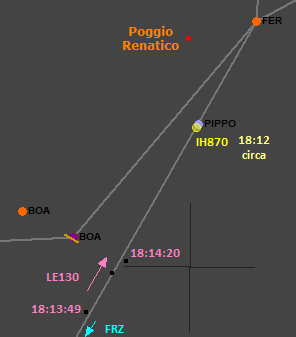
L'IH870, alle 18:12 circa riporta a Milano 2 Aerovie di essere sul punto PIPPO (v. "Comunicazioni T/B/T → 1) Salita iniziale"; la trascrizione indica "18:15/Z", ma dalle comunicazioni successive risulta che la trascrizione della parte iniziale del volo è avanti di circa 2 o 3 minuti).
LE130 (con transponder 5331) viene rilevato a 34124 ft, in volo verso nord (Ferrara) e transita nei pressi di Bologna alle 18:14 circa, quando l'IH870 sta ancora eseguendo la virata a destra per completare la partenza strumentale ed immettersi nell'aerovia A-12 alle 18:15 circa.
LE130 è oltre 15000 ft più in alto dell'IH870 e la breve distanza orizzontale che li separa non consente ai piloti di LE130 di vedere il DC-9, dovendo guardare davanti a loro e in basso con un angolo di circa 25°.
La possibilità che i passeggeri di LE130 potessero vedere l'IH870 (e il suo "autostoppista") è assolutamente nulla, dato l'incrocio frontale.
A prescindere da ciò che possono aver visto i piloti di LE130, bisogna considerare che la vicinanza di Poggio Renatico a Bologna dà la garanzia quasi assoluta che l'aereo che si è accodato all'IH870 lo ha fatto ben più a sud di Bologna, altrimenti si sarebbe visto qualche plot dalle parti di Bologna durante la fase di accodamento.
IH779
Nei pressi della radioassistenza di Firenze, l'IH870 incontra il Fokker 28 del volo IH779.
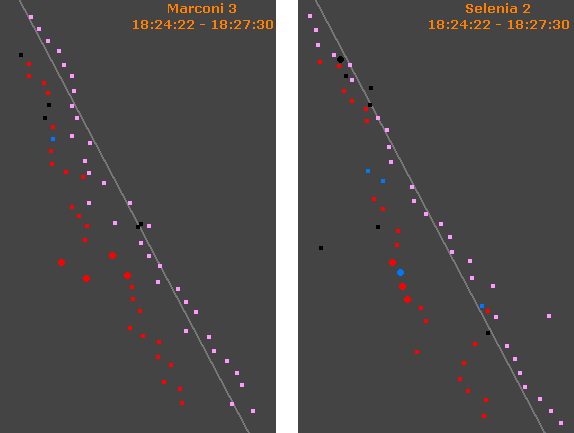
I tracciati mostrano ciò che è stato registrato dall'estrattore 3 del radar Marconi e dal 2 del Selenia.
Abbiamo in rosso l'IH870 e in rosa l'IH779. I plot neri sono di solo primario e quelli blu hanno codici di transponder diversi da 1133 (IH779) e 1136 (IH870).
Le due immagini sono soltanto utili, in questo contesto, per evidenziare che ogni tentativo di calcolare la posizione e la distanza reciproche tra i due aerei darebbe luogo ad un risultato del tutto inaccettabile, in quanto affetto da incertezze troppo elevate.
In questo caso, dunque, è indispensabile fare ricorso a tecniche in grado di rendere l'incertezza quanto più piccola possibile rispetto ad una traiettoria "media". Ciò che serve è la regressione polinomiale, strumento matematico largamente usato in questo sito.
È una tecnica concettualmente molto semplice, in quanto consiste nell'applicare algoritmi matematici per trovare un'equazione (una formula) che approssimi al meglio l'azimut di una serie di plot rispetto al radar e un'altra equazione che faccia la stessa cosa per la distanza dei plot dall'antenna.
Siccome il radar Selenia è meno disturbato dalle interferenze tra i due aerei, l'analisi qui presentata prende in considerazione solamente i due estrattori di questo radar.
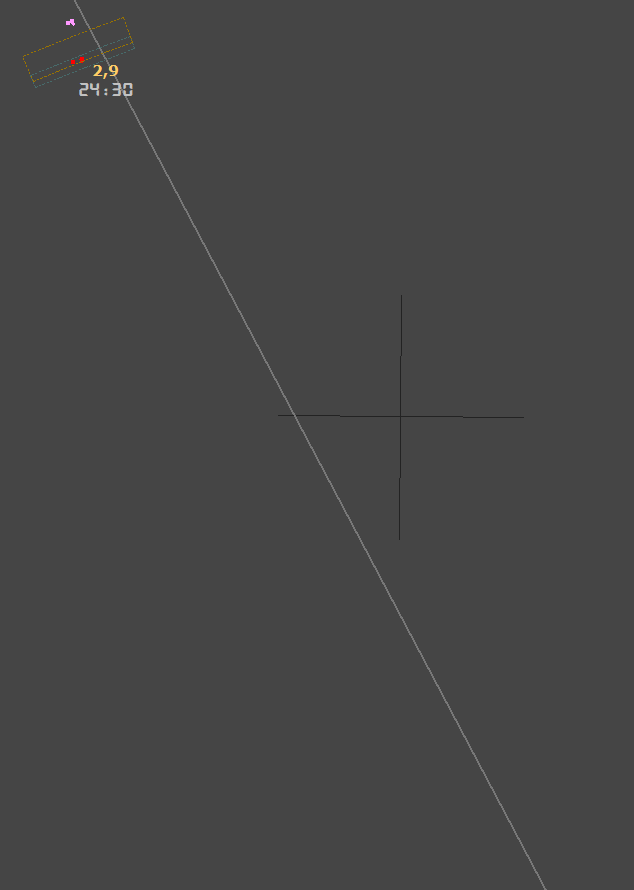
Il risultato della regressione è mostrato da questa animazione a velocità doppia.
Ci sono ancora le due tracce rossa e rosa (due plot per ogni aereo relativi agli estrattori 2 e 4 del Selenia), la distanza orizzontale tra i due aerei espressa in chilometri, l'orario espresso in minuti e secondi dopo le 18 e le due tracce interpolate.
Queste ultime sono rappresentate da segmenti lunghi quanto la distanza che il rispettivo aereo percorre in 6 secondi. Abbiamo, quindi, una lunghezza pari a circa 1200 m per l'IH870 e a circa 1460 m per l'IH779; quest'ultimo, infatti, sta tenendo una velocità di circa un'ottantina di nodi superiore a quella del DC-9 (le velocità, comunque, non sono costanti per tutta la durata dell'animazione).
Vengono, inoltre, mostrate le due zone all'interno delle quali l'ipotetico MiG si sarebbe potuto nascondere al radar Marconi (usato dai controlli di Roma). Quella più ampia è la zona soggetta al fenomeno del mascheramento, mentre quella più piccola è la cella di risoluzione nominale che si estende per 989 m (494,5 m avanti e dietro al DC-9) in senso radiale rispetto all'antenna del radar.
Per valutare con completezza la posizione relativa tra i due aerei, si tenga presente che l'IH779 sta mantenendo il livello di volo 250, mentre l'IH870, inizialmente vola al 190.
Qualche secondo prima delle 18:25, riceve l'autorizzazione per salire al 230 (v. "Comunicazioni T/B/T → Salita al livello 230"). I tabulati di Ciampino mostrano l'inizio della salita alle 18:24:59, momento in cui i due estrattori del Selenia riportano il DC-9 al livello 191. Alle 18:25:18, il Marconi lo riporta al 195.
Una ventina di secondi prima delle 18:28, il DC-9 inizia a livellare al 230 e alle 18:28 sta mantenendo il 230.
Alle 18:29, l'IH870 inizia la salita al livello 290 (v. "Comunicazioni T/B/T → Salita al livello finale di crociera") che raggiungerà poco prima delle 18:32.
Si può osservare che la distanza orizzontale si riduce fino a circa 1,5 km quando gli aerei hanno una differenza di quota di circa 4000 ft, per cui i due aerei sono distanti tra loro circa un paio di chilometri.
Se il MiG non avesse fatto niente per nascondersi agli occupanti di entrambi gli aerei, probabilmente sarebbe stato scorto. Il 1° ufficiale dell'IH779 era inizialmente in posizione abbastanza favorevole per vedere l'IH870, ma doveva avvicinarsi molto ai finestrini di destra per vedere il DC-9, perché parliamo di un angolo di una cinquantina di gradi verso il basso, un angolo veramente notevole e innaturale durante la normale sorveglianza dei piloti dello spazio circostante. Se, poi, il MiG era in coda al DC-9, l'angolo verso il basso sarebbe stato ancora maggiore.
Questo incrocio non presenta particolari difficoltà per il MiG, perché questo non avrebbe avuto alcun problema a zigzagare tra i due aerei, all'occorrenza, per mantenerli entrambi perfettamente in vista dal basso, celandosi ad entrambi (oltre che al radar Marconi).
Inizialmente, il MiG avrebbe potuto farsi dare un "passaggio" dall'IH779 (in posizione arretrata rispetto all'IH870). In seguito, data la notevole vicinanza tra i due aerei Itavia, il MiG poteva starsene tranquillamente tra i due, usufruendo anche di un'ampia protezione dai radar.
Successivamente, l'IH779 supera l'IH870, per cui la possibilità di avvistare il MiG si riduce progressivamente, anche perché la distanza è in continuo aumento e la posizione dell'IH870 ruota sempre più verso la coda dell'IH779.
BM300
Anche per questo incontro è necessaria l'interpolazione, in quanto entrambi i radar di Roma perdono svariati plot dei tre aerei. In questo caso, è sufficiente usare il solo estrattore 2 del Selenia.
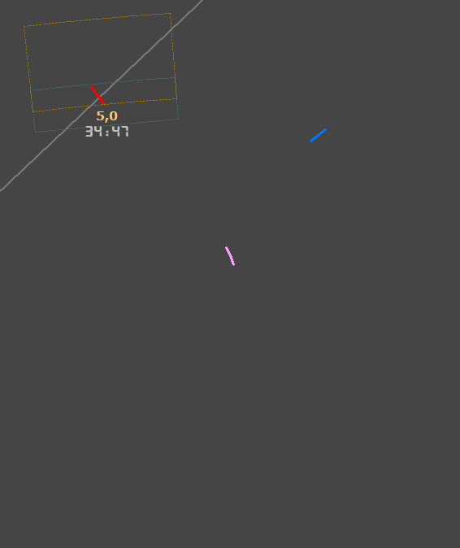
L'animazione, a velocità normale, mostra ancora i due aerei Itavia visti prima e il volo ATI BM300 (blu) da Trieste a Fiumicino (v. "Capitolo LXXXVII - Perizia radaristica Dalle Mese ed altri - 16.06.97." a pag. 161) lungo l'UA-15 (Ancona - Bolsena, il cui asse è mostrato con tratto grigio).
La simbologia è la stessa già descritta per la precedente animazione.
Mentre la finestra temporale usata per la precedente animazione era di 6 secondi, per questa animazione è di 2 secondi. Ciò dà origine alle seguenti lunghezze dei segmenti che rappresentano la rotta dei tre aerei: 520 m per l'IH870, 420 m per il BM300 e 440 m per l'IH779.
L'IH870 sta mantenendo il livello di volo 290, mentre il BM300 si trova al livello 270 fino ad 1 minuto prima dell'incrocio.
Una decina di secondi prima delle 18:34, Roma Radar autorizza il BM300 a scendere al livello 190. In questo momento, l'IH779 ha già iniziato la discesa e sta attraversando il livello 180.
L'animazione inizia con l'IH870 distante 5 km dal BM300, con quest'ultimo ad una quota inferiore di circa 5000 ft rispetto all'IH870.
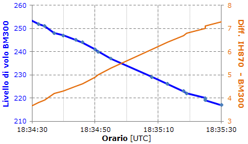
La differenza di quota tra i due aerei espressa in migliaia di piedi è mostrata da questo grafico.
Nel momento del transito sulla reciproca verticale, la differenza di quota è di circa 5600/5700 ft.
Quest'incrocio è senz'altro critico per il MiG, principalmente perché il BM300 sta scendendo di quota e si trova già varie migliaia di piedi al di sotto del DC-9. Se il MiG vuole mantenere all'incirca la stessa posizione rispetto al DC-9, deve scendere parecchio di quota, obbligando gli occupanti più curiosi del BM300 a guardare molto verso il basso, prima di scorgerlo, al punto di confondere il MiG con il terreno. Manovra non semplice, dato che il sole era ancora un paio di gradi sopra l'orizzonte, guardandolo dal livello del suolo.
Probabilmente, la cosa migliore da fare era abbassarsi di quota ed aggirare il BM300 verso est, per poi ricongiungersi all'IH870 mantenendo la posizione arretrata rispetto al BM300.
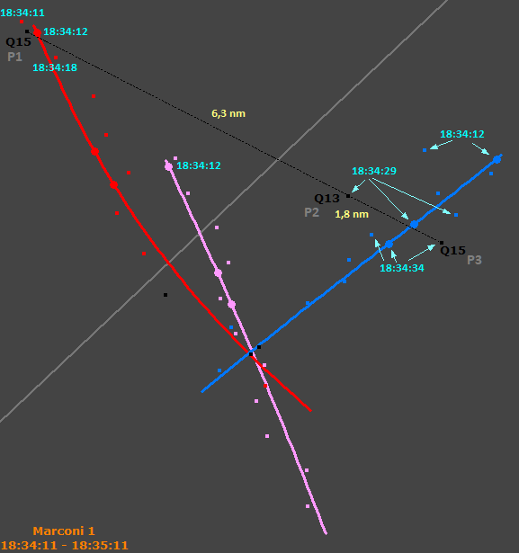
La cartina mostra la rotta interpolata dei tre aerei e i plot dell'estrattore 1 del Marconi, non usati per calcolare l'interpolazione, ma utili per evidenziare alcuni fatti a sostegno dell'ipotesi appena formulata.
I plot neri sono quelli di solo primario e i tre cerchietti situati lungo la rotta di ogni aereo rappresentano la posizione interpolata in corrispondenza dell'orario dei plot neri.
Il plot P1 in alto a sinistra viene registrato alle 18:34:12, è di qualità 15 (il massimo) e si trova a 310 m dal vicinissimo disco rosso che rappresenta la posizione interpolata dell'IH870 per lo stesso orario (la distanza reale può essere molto diversa a causa degli errori del radar).
Il tabulato dell'estrattore 1 (radar Marconi) riporta il plot P1 e il plot rosso delle 18:34:11 in questo modo (v. le due righe in grassetto):
Si può notare l'estrema vicinanza dei due plot (i calcoli dànno 380 m), ma tuttavia, l'estrattore non li associa, mantenendoli separati. Se non fossimo in presenza di un cambio di settore (notare "SETTORE=15" e "SETTORE=00"), quasi certamente i due plot indicherebbero la presenza di due aerei distinti, ma siccome i due plot, sebbene separati da appena 0,08°, vengono rilevati in due settori diversi, resta il dubbio che l'estrattore 1 possa non aver associato l'eco del radar primario alla risposta del transponder ricevuta dal radar secondario proprio per il semplice motivo che i due plot si trovano in settori differenti. L'estrattore 3 presenta i due plot nello stesso modo, con qualche differenza in distanza ed azimut.
A prescindere da cosa rappresenti realmente il plot P1, ne abbiamo altri due spostati verso il BM300.
Si potrebbe ipotizzare che questi tre plot neri rappresentino il MiG-23 che vola inizialmente nella stessa cella radar dell'IH870 e che alle 18:34:12 inizia ad allontanarsene a gran velocità, avvicinandosi al BM300, riducendo, al tempo stesso, la quota per acquistare velocità più velocemente e rendere più difficoltoso il rilevamento da parte dei radar. L'evidente motivo per eseguire questa dispendiosa manovra è quello di evitare che il BM300 si avvicini al MiG in condizioni tanto favorevoli da riconoscerne addirittura la sagoma.
Il pilota del MiG-23 potrebbe aver dato inizio alla manovra su indicazione ricevuta via radio o autonomamente, dopo aver visto le luci di un aereo civile (il BM300) che sta convergendo verso l'IH870 (alle 18:34:12 i due aerei distano 15 km).
Per appurare la possibilità, almeno teorica, che quei tre plot possano rappresentare un caccia, si può calcolare la velocità che avrebbe dovuto tenere il MiG per percorrere quella traiettoria; ecco ciò che si ottiene:
d è la distanza tra i plot e GSmedia è la velocità al suolo media necessaria per percorre d nel tempo t (per il tempo, il calcolo sfrutta il contatore ad alta risoluzione "TEMPO" presente nei tabulati, la cui risoluzione è 80 ms o 0,08 s). È riportato anche il numero di mach calcolato tenendo conto del meteo di quella sera, incluso il vento.
La velocità è sicuramente molto elevata, ma è senz'altro possibile per un MiG-23 senza carichi esterni che scende di quota, come parrebbe indicare il plot P2 dell'estrattore 1, con qualità 13 (inferiore a quella di P1, con qualità 15).
Sapendo bene che il radar Marconi ha un errore in azimut tutt'altro che trascurabile e che gli aerei, durante questo incontro, si trovano quasi esattamente a nord del radar, la reale posizione del MiG rappresentata dai plot P2 e P3 potrebbe essere indifferentemente più a est o più a ovest della posizione riportata nel tabulato (si può ritenere che P1 rappresenti la reale posizione del MiG con sufficiente precisione, in quanto deriva dalla regressione).
Se la posizione reale del plot intermedio P2 fosse più a ovest, la velocità dell'ipotetico caccia sarebbe inferiore di quella riportata nel prospetto, favorendo l'ipotesi che quei tre plot possano rappresentare un caccia che vuole sfuggire dalla vista del BM300. Viceversa, se la posizione reale del plot intermedio fosse più a est, la velocità del caccia sarebbe superiore a quella nel prospetto. Per sapere quanto inferiore o superiore, bisogna considerare l'incertezza azimutale del radar Marconi, come fatto nel paragrafo "Incertezze sui parametri e simulazioni Monte Carlo" della pagina "Caduta in mare", in cui risulta un'incertezza pari a ±0,8° con il 99,7% di confidenza. Tuttavia, quel valore è valido per quegli specifici plot, situati ad una distanza di 110÷130 nm dal radar.
Per distanze inferiori (durante questo incontro gli aerei si trovano a circa 54 nm dal radar Marconi), conviene usare l'incertezza data dal ten. col. Russo, Capo Ufficio Operazioni presso la RIV di Roma (v. trascrizione dell'esame a pag. 3), il cui valore può essere trovato a fondo pag. 3 del documento "WP003995_001.DOC" fonte:
NEL RADAR MARCONI CHE HA UN FASCIO DI 2 GRADI
L'ERRORE QUADRATICO MEDIO E' DI CIRCA 0.2 GRADI. E' IMPORTANTE NOTARE CHE PER LA LEGGE GAUSSIANA DI
DISTRIBUZIONE DEGLI ERRORI LA SINGOLA MISURA ANGOLARE PUO' ESSERE AFFETTA DA
ERRORI CHE RAGGIUNGONO IL VALORE DI ±3 [±3σ, ndr] CIOE' PER IL RADAR IN QUESTIONE DI CIRCA
± 0.6 GRADI IN TALE VALORE RIENTRA IL 99.73% DEGLI ERRORI POSSIBILI.
Russo definisce erroneamente "errore quadratico medio" il valore 0,2°, ma in realtà sta parlando della sua radice quadrata o RMSE (valore largamente usato in elettronica), cioè della deviazione standard degli errori azimutali, come risulta evidente quando afferma che il 99,73% dei possibili errori è compreso tra ±0,6° (v. riepilogo al termine del paragrafo "Distribuzione normale → Metodologia", che riporta il 99,7% per l'intervallo ±3σ).
Considerando, quindi, l'incertezza "generica" di ±0,6°, si può ruotare il plot P2 di 0,6° in senso antiorario (cioè lo si sposta ad ovest) per posizionarlo al limite inferiore dell'incertezza, confidando sul fatto che una posizione ancora più ad ovest di questa è estremamente improbabile (data l'elevatissima confidenza usata). Così facendo, la distanza di 6,34 nm da P1 si riduce a 5,85 nm, riducendo la velocità al suolo media a 1259 kn, equivalenti a circa mach 1,91.
Ruotando, invece, il plot in senso orario, la velocità sale a mach 2,26.
Per il secondo tratto (quello da P2 a P3), le velocità risultano ancor più compatibili con un caccia e l'estrattore 1 mostra una decelerazione, come ad indicare la salita del MiG. Tuttavia, resta la possibilità che i tre plot possano essere falsi plot del tutto casuali (specialmente P2) che niente hanno a che vedere con un aereo che percorre quella rotta.
Una possibile verifica consiste nel trovare tutte le rotte composte da tre plot di solo primario simili a quella formata da P1, P2 e P3; più ce ne sono, maggiore è la probabilità che i plot siano casuali (è la stessa tecnica usata nel paragrafo "I famosi plot a ovest" della pagina "Abbattimento tramite missili inerti").
Iniziamo con il considerare tutti i plot di solo primario presenti nei tabulati degli estrattori 1 e 3 (radar Marconi) che soddisfano le seguenti condizioni:
azimut rispetto al radar Marconi tale da escludere i falsi plot generati dal sole al tramonto (plot da 296° a 303° e da 81° a 83°);
esclusione dei plot presenti nella zona e nell'orario dell'abbattimento.
Il programma scritto per fare tutti i calcoli, trova che le due condizioni sono soddisfatte da 2152 plot dell'estrattore 1 e da 2312 plot dell'estrattore 3.
Al fine di ottenere un profilo di volo simile a quello mostrato dai tre plot P1, P2 e P3, per ognuno dei due estrattori il programma effettua una ricerca esaustiva di tutte le terne di plot che non si discostano troppo dai parametri originali. Convenzionalmente, lo scostamento che si può ritenere accettabile e che quindi è impostato nel programma di calcolo è il ±20% sia sulla distanza tra i plot che sulla velocità, ottenendo, per l'estrattore 1, le seguenti condizioni da soddisfare:
distanza tra due plot consecutivi compresa tra 1,83 x 0,8 = 1,464 nm e 6,34 x 1,2 = 7,608 nm;
velocità risultante tra due plot consecutivi compresa tra 1196 x 0,8 = 956,8 kn e 1366 x 1,2 = 1639,2 kn;
divergenza tra la rotta per andare dal plot1 al plot2 e quella per andare dal plot2 al plot3 non superiore a 20° (i due segmenti di rotta devono essere abbastanza allineati, come la rotta di riferimento).
In pratica, il programma, partendo dal 1° plot memorizzato, cerca il 2° plot che soddisfa le condizioni 1 e 2, se lo trova, inizia la ricerca del 3° plot che soddisfa le condizioni 1 e 2 rispetto al 2° plot e la condizione 3. I tre plot così trovati soddisfano tutte le condizioni imposte e sono compatibili con un aereo che si muove dal 1° plot, passa per il 2° e arriva al 3° percorrendo il tragitto con rotta e velocità simile a quella originale, ottenendo una terna di plot del tutto simile a quella formata dai tre plot P1, P2 e P3.
Il programma trova 18 terne di plot per l'estrattore 1 e 28 terne per l'estrattore 3 che soddisfano le condizioni imposte.
Pur avendo preso in considerazione più di 2000 plot, le terne compatibili con quella originale sono solo lo 0,8% per l'estrattore 1 e l'1,2% per l'estrattore 3.
Già da questo primo risultato, è evidente la notevole differenza con quanto trovato per i plot -17, -12 e 2b nell'analisi presentata nella già citata pagina "Abbattimento tramite missili inerti": per i "plot a ovest" il programma trova più di 200 terne del tutto simili all'originale cercando tra circa 1000 plot, mentre in questo caso si arriva appena ad 1/20 di quel valore, con la conseguenza che i plot -17, -12 e 2b hanno una buona probabilità di essere del tutto casuali (falsi plot), mentre P1, P2 e P3 hanno un'elevata probabilità di non essere falsi plot.
Informazioni ancor più utili si ottengono dalla seguente cartina.
Qui vengono mostrati soltanto i plot presi in considerazione; quelli bordati di rosso sono i plot che appartengono alle terne di plot simili a quella formata da P1, P2 e P3 (l'immagine può essere ingrandita cliccandoci sopra).
Estrattore:
Si può notare l'unicità della terna originale (in alto, a nord del radar), ben separata da qualunque altra terna di plot.
La maggior parte delle terne trovate sono ammassate a nord est del radar, a circa 20 nm da questo; nemmeno una è presente a distanza maggiore.
L'estrattore 1 mostra soltanto 1 terna simile all'originale, mentre l'estrattore 3 ne mostra 3, ma tutte sono entro le 10 miglia dal radar.
Insomma, l'unicità della terna originale risulta piuttosto evidente e pur in assenza di una certezza che P1, P2 e P3 rappresentino effettivamente la rotta seguita da un caccia supersonico, è innegabile la significativa probabilità che possano esserlo.
Si può affermare, dunque, che la traiettoria formata da P1, P2 e P3 è compatibile con un MiG-23 che manovra a gran velocità, scendendo di quota per evitare di essere riconosciuto dal BM300. Questo, ovviamente, non significa avere la certezza che quei tre plot rappresentino effettivamente un caccia supersonico, ma la probabilità che ciò possa essere vero, per quanto detto, è piuttosto significativa.
Questa cartina aiuta a visualizzare il paesaggio e l'orografia in cui avrebbe volato il caccia abbassandosi di quota.
La linea nera serve per la scala ed è lunga 3 nm (5556 m).
Per avere il maggior numero possibile di elementi, si può cambiare il tipo di cartina visualizzata tramite l'apposito menu a tendina.
Tipo di cartina:
È evidente che l'orografia non presenta alcun tipo d'ostacolo; sono presenti due paesini (probabilmente con poche anime nel 1980) e il resto è tutta vegetazione, campi e colline.
Un caccia supersonico avrebbe fatto sicuramente un gran fracasso, attirando l'attenzione di eventuali osservatori, ma dato il tipo di paesaggio che si è trovato a sorvolare, non dovevano esserci molti occhi puntati su di lui. La quota, comunque, doveva essere abbastanza alta (probabilmente sopra ai 10000 ft), altrimenti la velocità non sarebbe stata così elevata.
Aereo con transponder 4764
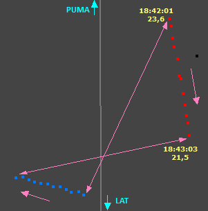
Questo aereo sta scendendo dal livello di volo 88 al 76 per atterrare a Fiumicino, mentre l'IH870 sta mantenendo il livello 290.
La distanza minima tra i due aerei è circa 20,2 km alle 18:42:40. A questa distanza si può notare la presenza di un aereo piccolo quanto un DC-9-15 solo grazie alle sue luci (specialmente quelle stroboscopiche). La possibilità di avvistare un piccolo MiG nei pressi del DC-9 è assolutamente nulla.
La posizione del 4764, inoltre, è poco favorevole per volgere lo sguardo verso il DC-9.
Aereo con transponder 0444
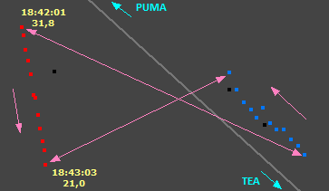
Quest'altro aereo è in salita dal livello 233 al 241 (sembra essere decollato da Napoli).
La distanza minima è circa 20,4 km alle 18:42:40. Anche questo incrocio, quindi, avviene a notevole distanza. C'è, inoltre, d'aggiungere che la posizione è sfavorevole rispetto al sole, tanto che inizialmente il DC-9 (visto dall'altro aereo) è quasi completamente "nascosto" dal bagliore del sole.
Anche in questo caso, quindi, si potevano solo vedere le luci di navigazione del DC-9, nient'altro.
I due aerei sfilano ad una distanza di circa 9/10 km (dipende dall'estrattore considerato). La differenza di quota è notevole, perché l'IH870 è già sceso al livello 250 e l'altro si trova al livello 390 (circa 14000 ft o 4,3 km di differenza).
Il comandante del KT881 e i passeggeri seduti a sinistra potevano scorgere l'IH870 guardando in basso verso il mare con un angolo di circa 23°. Siccome il sole era già tramontato al livello del mare, quest'ultimo appariva piuttosto scuro, rendendo il MiG (visto dal KT881) indistinguibile dallo sfondo.
Il pilota del MiG, invece, vedeva perfettamente il KT881, sia per le dimensioni che per la perfetta illuminazione del sole che, visto da una quota di 39000 ft, risultava ampiamente al di sopra dell'orizzonte (circa 2°). Se l'avesse ritenuto opportuno, il pilota del MiG avrebbe potuto facilmente nascondersi letteralmente sotto al DC-9, mantenendo sempre i 2000 ft di separazione verticale di cui si è già parlato.
Conclusione
Anche questa bufala sulle decine d'incroci risulta oggettivamente priva di fondamento, poiché soltanto tre incroci avrebbero potuto consentire, almeno in teoria, l'avvistamento di un aereo nei pressi del DC-9.
Da questi tre incroci, conviene eliminare subito quello con il KT881, in quanto non avrebbe consentito di riconoscere in alcun modo né il DC-9 né, tantomeno, il MiG e quest'ultimo, quasi certamente, non sarebbe nemmeno stato visto.
L'incrocio con l'IH779 avrebbe potuto consentire, in teoria, l'avvistamento del MiG, ma per far sì che ciò fosse accaduto, il MiG avrebbe dovuto essere una sorta di aliante trainato dal DC-9, perché in caso contrario, un aereo, e in particolare un caccia, può agevolmente manovrare per rimanere nascosto sia ai radar che agli occupanti dei due aerei Itavia.
L'incrocio con il BM300, infine, è oggettivamente l'unico a presentare reali criticità per il MiG e dei possibili modi per evitare l'avvistamento s'è già detto.
Quando si parla di luoghi comuni, vale sempre la pena sottolineare la superficialità con la quale i creativi di Ustica cercano di escludere ipotesi perfettamente possibili senza nemmeno avere contezza di ciò che in realtà è accaduto. In questo caso, viene sempre e solo nominato l'incrocio con l'IH779, che in realtà non presenta alcuna criticità per un caccia, mentre l'incrocio con il BM300 non viene mai nominato, pur essendo l'unico a rappresentare un potenziale problema per il MiG.